Private by design
Streams never leave your local Wi-Fi. WebCam does not route video through developer servers or require any account to start streaming.
Private local streaming, no cloud
Turn your Android phone into a live Wi-Fi camera in seconds — no account, no cloud, no cables. Tap Start and the stream opens instantly in any browser, or pipe it into VLC and OBS over RTSP.
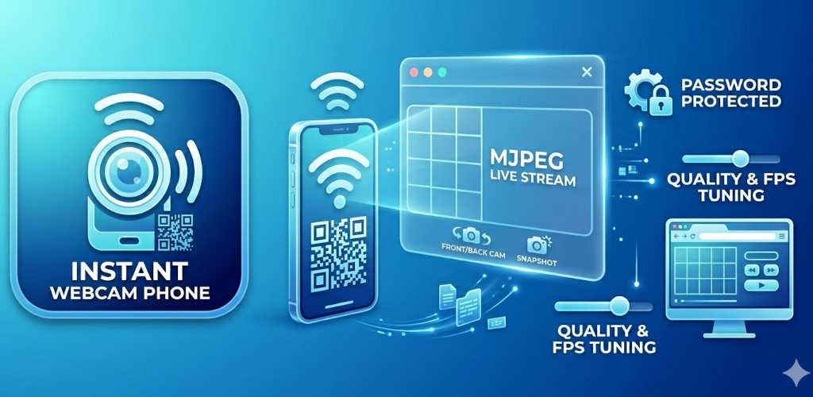
Good for
Streams never leave your local Wi-Fi. WebCam does not route video through developer servers or require any account to start streaming.
The live feed opens directly in Chrome, Safari, or any modern browser via MJPEG. No viewer app to install on the receiving device.
RTSP mode streams H.264 video with optional live audio. Paste the RTSP URL into OBS, VLC, or any compatible media player.
Why people use WebCam
Mount your phone and open the stream URL in a browser tab — then use your browser tab as a webcam source in video calls, meetings, or recordings via a virtual camera tool.
Add the RTSP stream as a source in OBS or VLC. Stream a second angle, document your desk setup, or run an overhead camera for crafting and repair content.
Check a room, monitor a cot corner, or keep an eye on a pet — all through a browser on your own private Wi-Fi with no cloud account involved.
Feature set
Stream opens directly in any browser on the same Wi-Fi. Share by QR code or copy the URL — no viewer app needed.
H.264 stream with optional live microphone audio for VLC, OBS, and media player apps. Password-protect the RTSP feed.
Tap the QR button to generate a scannable code for the stream URL. Open the feed on another device in one scan.
Tune resolution, frame rate, and JPEG quality independently. Pro unlocks 30 FPS and 1280×720 for sharper, smoother streams.
Gate the browser control page and RTSP stream with a password so only you can start, stop, or view the feed.
Free mode covers short sessions for trying it out. Pro removes session limits and unlocks higher resolution and frame rate — no subscription.
Real app screens
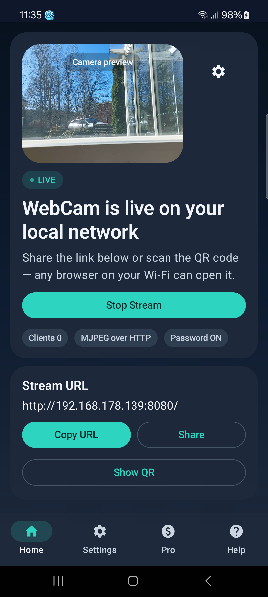
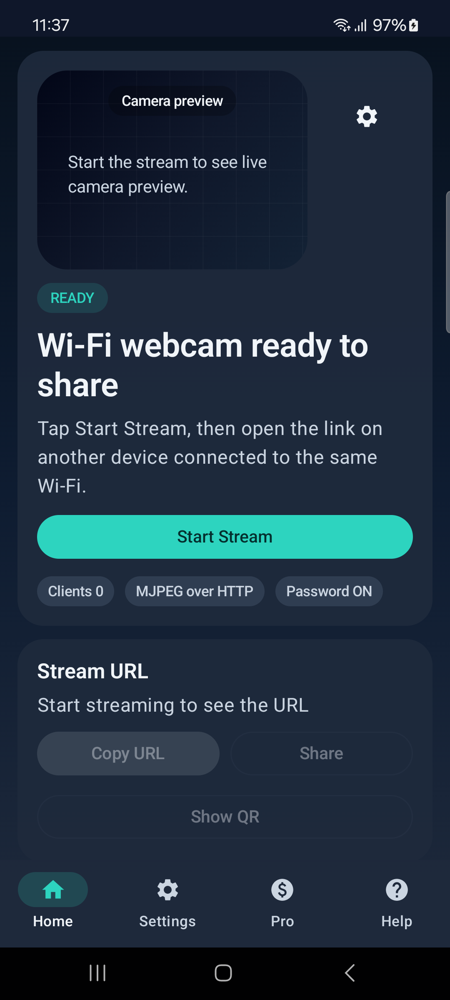
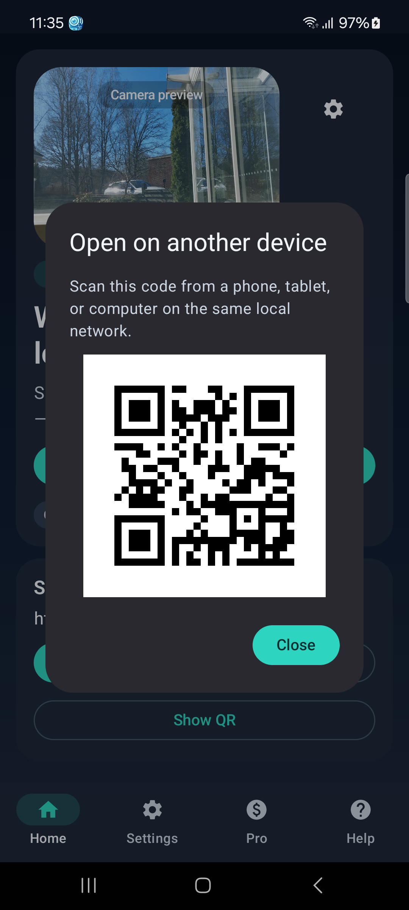
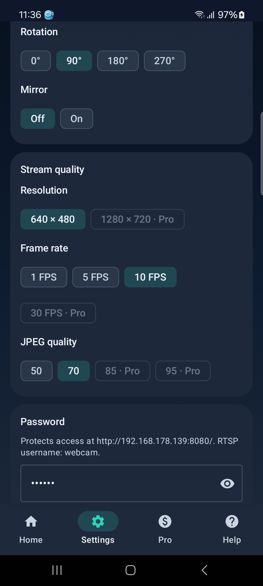
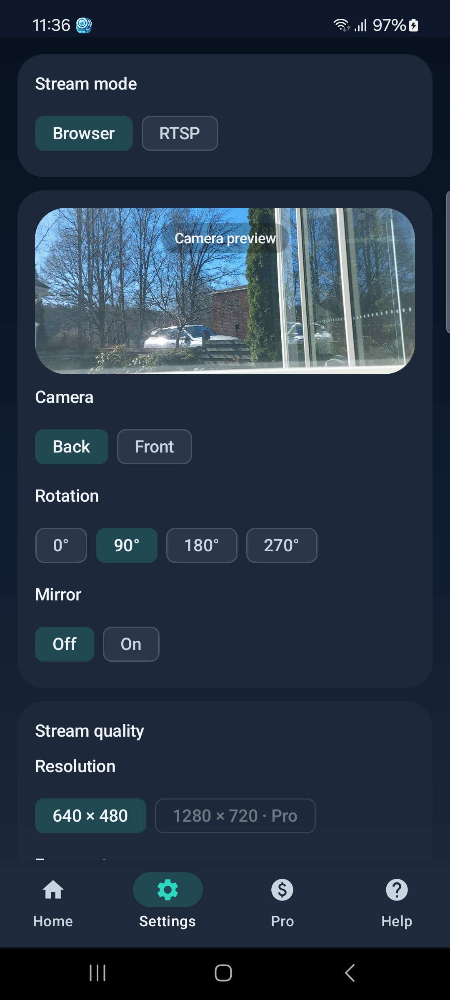
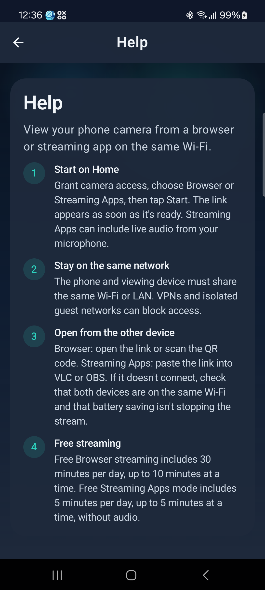
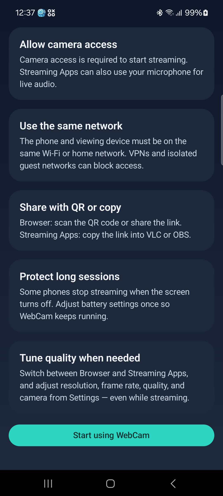
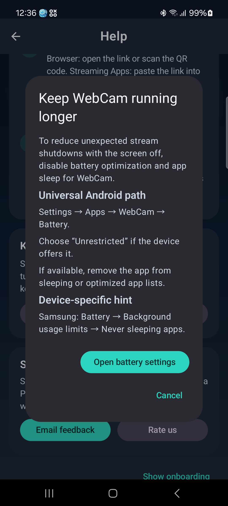
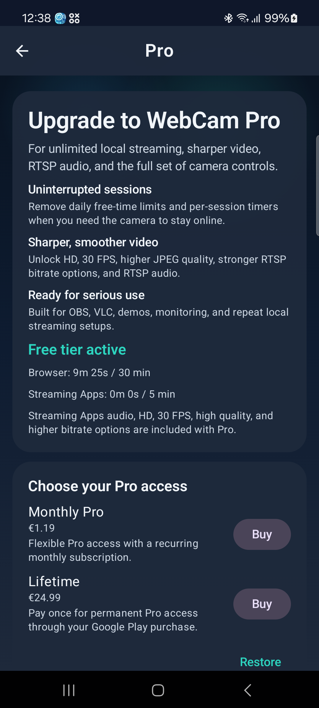
What the viewer sees
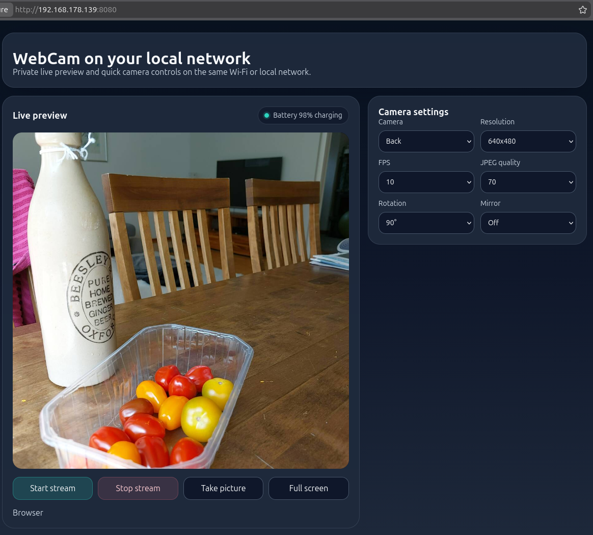
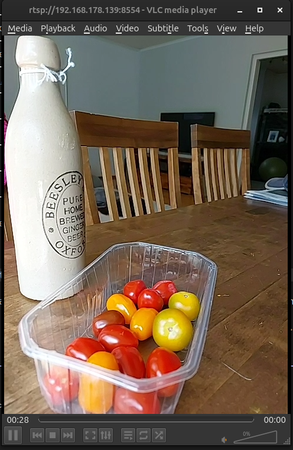
See it in motion
The demo shows the stream starting, the QR share flow, and the RTSP setup in under two minutes.
Reliability on Android
WebCam runs as a foreground service to stay active when the screen is off. For reliable long-running sessions — baby monitor, office camera, overnight stream — the app includes battery optimization guidance to prevent Android from suspending the stream in the background.
Privacy
Camera video is processed on your device and shared locally on your network. WebCam does not route your stream through developer servers and does not require an account to start streaming.
FAQ
No. In Browser mode the live feed opens in Chrome, Safari, or any modern browser with no extra app. RTSP mode requires a player like VLC or OBS.
WebCam is designed for local-network use. Both the phone and viewing device need to be on the same Wi-Fi or home network. It is not built for remote internet access.
Yes. Switch to RTSP mode in settings, copy the RTSP URL, and add it as a Media Source in OBS. Optionally enable microphone audio for a combined A/V stream.
Yes. Free mode gives you short streaming sessions — enough to try it out. Pro removes session limits and unlocks 30 FPS and 1280×720 resolution as a one-time purchase, no subscription.
No. WebCam streams live frames directly to viewers on your network. It does not record, save, or upload your camera footage.
The app runs a foreground service and shows a persistent notification while streaming. For very long sessions, follow the in-app battery guidance to disable optimization for WebCam in Android settings.